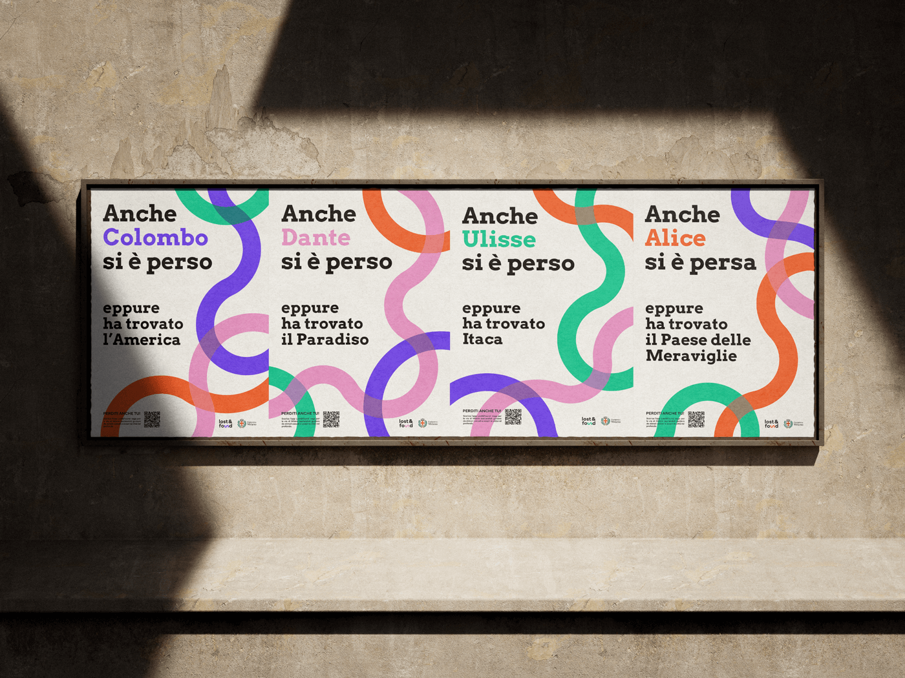
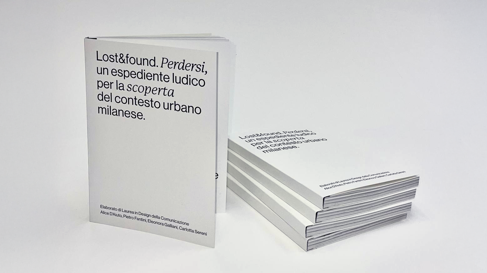
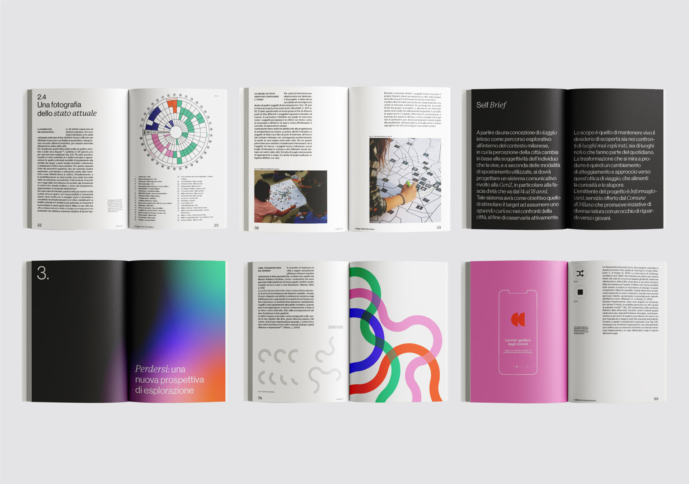
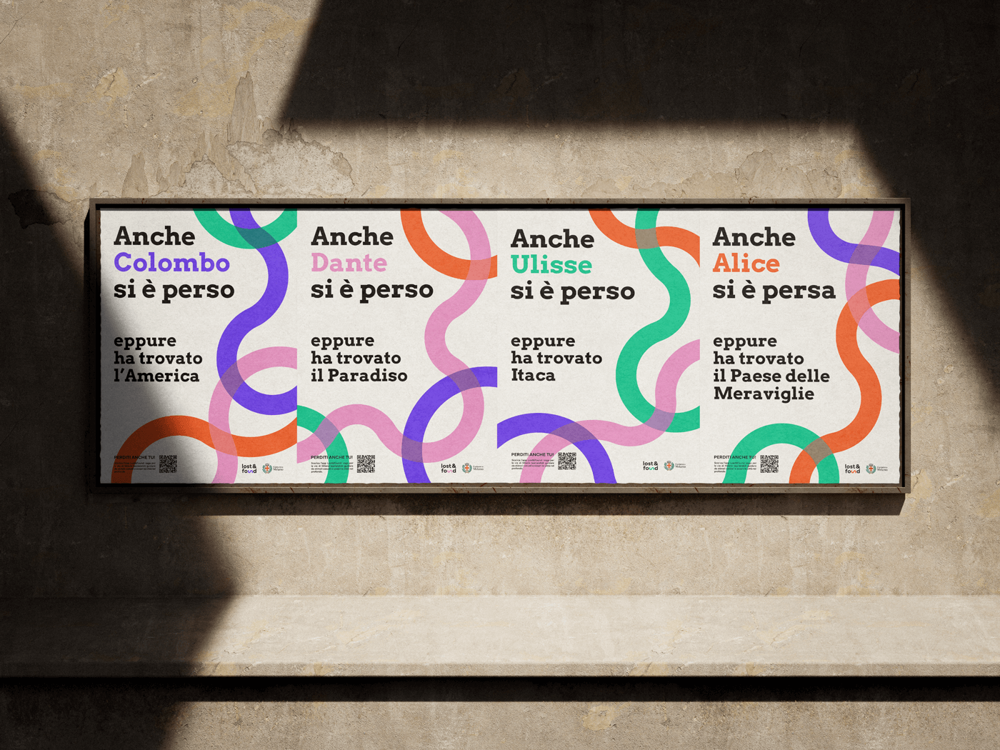
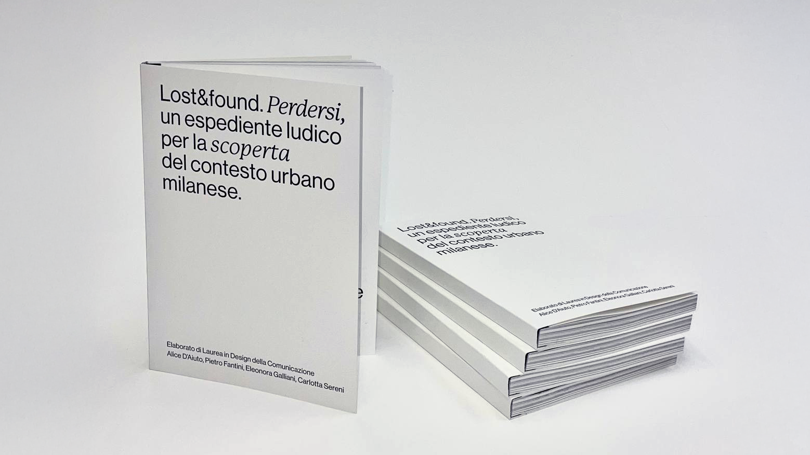
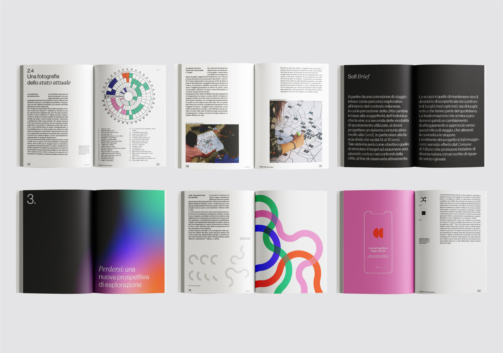

LOST&FOUND
/ SERVICE DESIGN
/ BACHELOR THESIS PROJECT
/ 2022
/ TEAM: A. D'AIUTO, P. FANTINI,
E. GALLIANI, C. SERENI
Lost&found is an app, supported by a communication campaign (both physical and digital), whose goal is to stimulate and feed the curiosity of Milan’s Gen Z in exploring the city. Lost&found is an innovative experience, in which the user is asked to get lost in the city: only in this way will they be able to look at it with new eyes and come across unexpected discoveries. The user starts the exploratory session and, after choosing the methods of moving around, the app generates random commands inviting them to chase visual, olfactory and sound stimuli. The user can also share their experience with friends. This encourages them to look at their surroundings in an active way, to observe details they would probably never have noticed.
 




